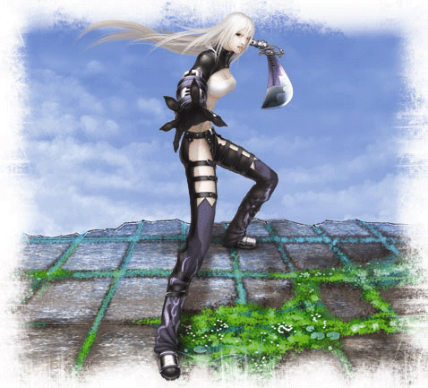
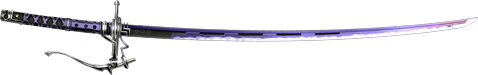

Name: Celia
Birthplace: Unknown
Fighting Style: Selene
Age: 18
Height: 1.71 meters
Weight: 51 kg
3-Sizes: Secret!
Hobbies:Collecting beautiful things

Everything about Celia is shrouded in mystery. even
to herself.
Without past or identity, her earliest memories were of
wandering through a deserted wasteland until falling
unconscious. Her small body was then found, barely
alive, by members of an ancient secret society. And
from the very beginning they felt she was special.
Rescuing her from death’s doors, her saviors trained
and prepared the girl to be a living weapon; a perfect
fighter that far exceeded human limits. At first Celia
absorbed their teachings with devotion, as a good
daughter trying to impress her parents would. However,
as she matured, Celia began to wonder if what she was
doing was right.
Finally, on the day that Celia became sixteen she
was sent to end the life of a renegade agent who had
betrayed the society. After a long chase she managed
to corner him. But despite all her skill, Celia was not
a murderer.
Letting him go, she realized that she could never return
to her old life, and ran as far as she could.
Hoping to find her past. Something that she could
call her own and help to redeem her sins.
